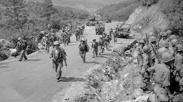

Landforms
There are many landforms on both Koreas, but these are the most important ones.
"Mount Paektu", it's located on the border between North Korea and China.
"Korean Peninsula" itself is a key geographical feature, surrounded by the Yellow Sea to the west and the Sea of Japan (East Sea) to the east.
"Yalu River" Forms part of the border between North Korea and China, it was a crucial strategic point during the war.
"Korean Demilitarized Zone" Is a heavily fortified buffer zone across the Korean Peninsula, these divides both Koreas.
"Taebaek Mountains" These mountains runs along the eastern side of the Korean Peninsula.
Bodies of water
"Yellow Sea" It's located on the west of the Korean Peninsula, it used to have a role in naval operations during the Korean war. "Sea of Japan" To the east of the Korean Peninsula, the Sea of Japan (also known as the East Sea) influenced naval activities and provided maritime access. "Yalu River" The Yalu River forms part of the border between North Korea and China and was a crucial strategic point during the war. "Naktong River" The Naktong River is one of the major rivers in South Korea and played a role in the defense against the North Korean advance during the Korean War. "Han River" Flowing through Seoul, the capital of South Korea, the Han River is a significant waterway with cultural and economic importance.
Cities
"Pyongyang" The capital and largest city of North Korea, Pyongyang, played a central role in the Korean War and remains a key political and cultural center. "Seoul" The capital and largest city of South Korea, Seoul, changed hands multiple times during the war and is a major global city today. "Incheon" Incheon, a port city on the western coast of South Korea, was the site of the famous Incheon Landing, a key strategic maneuver led by General Douglas MacArthur during the war."Wonsan" Wonsan, a port city on the east coast of North Korea, saw military action during the Korean War."Busan" Busan, located in the southeastern part of South Korea, served as a critical port city and played a strategic role during the war.
Characteristics
On terms of Ethnicity, 99% of Korean population identifies there self as Predominantly Korean. Both Koreas spoke Korean and it's the official language. Various religions are practiced, included Buddhism, Christianity, and Catholicism.